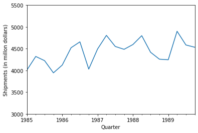
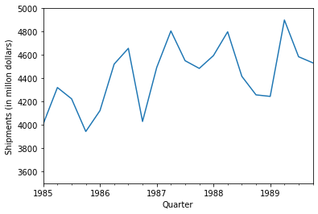
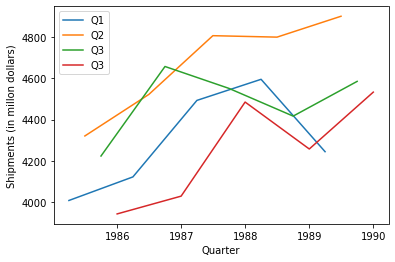
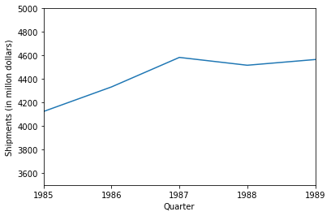
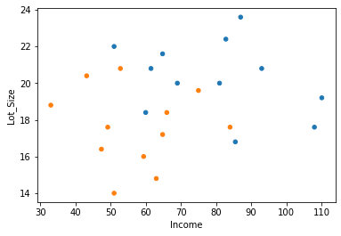
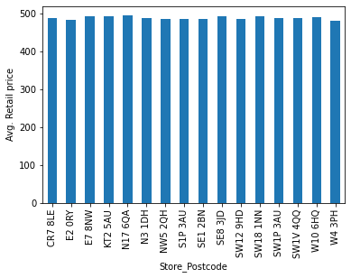
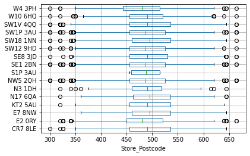

# import required packages for this chapter
from pathlib import Path
import pandas as pd
import matplotlib.pylab as plt
%matplotlib inlineChapter 3: Data Visualization
- 2019-2020 Galit Shmueli, Peter C. Bruce, Peter Gedeck
Data Mining for Business Analytics: Concepts, Techniques, and Applications in Python (First Edition) Galit Shmueli, Peter C. Bruce, Peter Gedeck, and Nitin R. Patel. 2019.
Date: 2020-03-08
Python Version: 3.8.2 Jupyter Notebook Version: 5.6.1
Packages: - matplotlib: 3.2.0 - pandas: 1.0.1
The assistance from Mr. Kuber Deokar and Ms. Anuja Kulkarni in preparing these solutions is gratefully acknowledged.
# Working directory:
#
# We assume that data are kept in the same directory as the notebook. If you keep your
# data in a different folder, replace the argument of the `Path`
DATA = Path('.').resolve().parent / 'data'
FIGURES = Path('.').resolve().parent / 'figures' / 'chapter_03'
FIGURES.mkdir(exist_ok=True, parents=True)
# and then load data using
#
# pd.read_csv(DATA / ‘filename.csv’)Problem 3.1 Shipments of Household Appliances: Line Graphs.
The file ApplianceShipments.csv contains the series of quarterly shipments (in millions of dollars) of US household appliances between 1985 and 1989.
3.1.a. Create a well-formatted time plot of the data using Python.
# load the data
shipments_df = pd.read_csv(DATA / 'ApplianceShipments.csv', squeeze=True)
shipments_df.shape(20, 2)shipments_df.head()| Quarter | Shipments | |
|---|---|---|
| 0 | Q1-1985 | 4009 |
| 1 | Q2-1985 | 4321 |
| 2 | Q3-1985 | 4224 |
| 3 | Q4-1985 | 3944 |
| 4 | Q1-1986 | 4123 |
# convert the data frame to be suitable for time series analysis
# create date range for quarters
shipments_df = shipments_df.iloc[0:,1:2]
date_range = pd.date_range(start='1/1/1985', end='12/31/1989', freq='Q')
shipments_df['Date'] = pd.to_datetime(date_range)
shipments_ts = pd.Series(shipments_df.Shipments.values, index=shipments_df.Date)
shipments_tsDate
1985-03-31 4009
1985-06-30 4321
1985-09-30 4224
1985-12-31 3944
1986-03-31 4123
1986-06-30 4522
1986-09-30 4657
1986-12-31 4030
1987-03-31 4493
1987-06-30 4806
1987-09-30 4551
1987-12-31 4485
1988-03-31 4595
1988-06-30 4799
1988-09-30 4417
1988-12-31 4258
1989-03-31 4245
1989-06-30 4900
1989-09-30 4585
1989-12-31 4533
dtype: int64# line plot
shipments_ts.plot(ylim=(3000, 5500), legend=False)
plt.xlabel('Quarter')
plt.ylabel('Shipments (in millon dollars)')Text(0, 0.5, 'Shipments (in millon dollars)')
3.1.b. Does there appear to be a quarterly pattern? For a closer view of the patterns, zoom in to the range of 3500–5000 on the y-axis.
shipments_ts.plot(ylim=(3500, 5000), legend=False)
plt.xlabel('Quarter')
plt.ylabel('Shipments (in millon dollars)')Text(0, 0.5, 'Shipments (in millon dollars)')
Yes, there appears a quarterly pattern in the above time series. The time plot shows a repeating pattern each year (more shipments in Q2 and Q3 and less shipments in Q1 and Q4). Limiting the y-axis to the range of 3500 - 5000 shows the quarterly pattern in the time series a bit more clearly.
3.1.c. Using Python, create one chart with four separate lines, one line for each of Q1, Q2, Q3, and Q4. In Python, this can be achieved by adding columns for quarter and year. Then group the data frame by quarter and then plot shipment versus year for each quarter as a separate series on a line graph. Zoom in to the range of 3500–5000 on the y-axis. Does there appear to be a difference between quarters?
# generate separate time series for each quarter
Q1 = shipments_df.iloc[[0, 4, 8, 12, 16], :]
Q1_ts = pd.Series(Q1.Shipments.values, index=Q1.Date)
Q2 = shipments_df.iloc[[1, 5, 9, 13, 17], :]
Q2_ts = pd.Series(Q2.Shipments.values, index=Q2.Date)
Q3 = shipments_df.iloc[[2, 6, 10, 14, 18], :]
Q3_ts = pd.Series(Q3.Shipments.values, index=Q3.Date)
Q4 = shipments_df.iloc[[3, 7, 11, 15, 19], :]
Q4_ts = pd.Series(Q4.Shipments.values, index=Q4.Date)# line plots
plt.plot(Q1_ts, data=Q1_ts, label='Q1')
plt.legend()
plt.plot(Q2_ts, data=Q2_ts, label='Q2')
plt.legend()
plt.plot(Q3_ts, data=Q3_ts, label='Q3')
plt.legend()
plt.plot(Q4_ts, data=Q4_ts, label='Q3')
plt.legend()
plt.xlabel('Quarter')
plt.ylabel('Shipments (in millon dollars)')Text(0, 0.5, 'Shipments (in millon dollars)')
Yes, we can see differences between the quarters. From the above plot we can see that the shipments in quarters Q2 and Q3 are larger than in quarters Q1 and Q4.
3.1.d. Using Python, create a line graph of the series at a yearly aggregated level (i.e., the total shipments in each year).
# yearly aggregated series
byYear = shipments_ts.groupby(pd.Grouper(freq='A')).mean()
byYear.plot(ylim=(3500, 5000), legend=False)
plt.xlabel('Quarter')
plt.ylabel('Shipments (in millon dollars)')Text(0, 0.5, 'Shipments (in millon dollars)')
Shipments show increasing trend from 1985-1987. After that it is mostly flat.
3.2. Sales of Riding Mowers: Scatter Plots.
A company that manufactures riding mowers wants to identify the best sales prospects for an intensive sales campaign. In particular, the manufacturer is interested in classifying households as prospective owners or nonowners on the basis of Income (in $ 1000s) and Lot Size (in 1000 ft2). The marketing expert looked at a random sample of 24 households, given in the file RidingMowers.csv.
3.2.a. Using Python, create a scatter plot of Lot Size vs. Income, color-coded by the outcome variable owner/nonowner. Make sure to obtain a well-formatted plot (create legible labels and a legend, etc.).
# load the data
mowers_df = pd.read_csv(DATA / 'RidingMowers.csv', squeeze=True)
mowers_df.shape(24, 3)mowers_df.head()| Income | Lot_Size | Ownership | |
|---|---|---|---|
| 0 | 60.0 | 18.4 | Owner |
| 1 | 85.5 | 16.8 | Owner |
| 2 | 64.8 | 21.6 | Owner |
| 3 | 61.5 | 20.8 | Owner |
| 4 | 87.0 | 23.6 | Owner |
# scatter plot of Lot Size vs. Income
mowers_df.plot.scatter(x='Income', y='Lot_Size',
c=['C0' if c == 'Owner' else 'C1' for c in mowers_df.Ownership])
Owners appears to have higher income and larger lot sizes as compared to non-owners.
3.3. Laptop Sales at a London Computer Chain: Bar Charts and Boxplots.
The file LaptopSalesJanuary2008.csv contains data for all sales of laptops at a computer chain in London in January 2008. This is a subset of the full dataset that includes data for the entire year.
# load the data
laptop_df = pd.read_csv(DATA / 'LaptopSalesJanuary2008.csv', squeeze=True)
# Check if data is loaded correctly
print(mowers_df.shape)
print(laptop_df.head())(24, 3)
Date Configuration Customer Postcode Store Postcode \
0 1/1/2008 0:01 163 EC4V 5BH SE1 2BN
1 1/1/2008 0:02 320 SW4 0JL SW12 9HD
2 1/1/2008 0:04 23 EC3V 1LR E2 0RY
3 1/1/2008 0:04 169 SW1P 3AU SE1 2BN
4 1/1/2008 0:06 365 EC4V 4EG SW1V 4QQ
Retail Price Screen Size (Inches) Battery Life (Hours) RAM (GB) \
0 455 15 5 1
1 545 15 6 1
2 515 15 4 1
3 395 15 5 1
4 585 15 6 2
Processor Speeds (GHz) Integrated Wireless? HD Size (GB) \
0 2.0 Yes 80
1 2.0 No 300
2 2.0 Yes 300
3 2.0 No 40
4 2.0 No 120
Bundled Applications? OS X Customer OS Y Customer OS X Store OS Y Store \
0 Yes 532041 180995 534057.0 179682.0
1 No 529240 175537 528739.0 173080.0
2 Yes 533095 181047 535652.0 182961.0
3 Yes 529902 179641 534057.0 179682.0
4 Yes 531684 180948 528924.0 178440.0
CustomerStoreDistance
0 2405.873022
1 2507.558574
2 3194.001409
3 4155.202281
4 3729.298057 # Print the list of variables to the screen
laptop_df.columnsIndex(['Date', 'Configuration', 'Customer Postcode', 'Store Postcode',
'Retail Price', 'Screen Size (Inches)', 'Battery Life (Hours)',
'RAM (GB)', 'Processor Speeds (GHz)', 'Integrated Wireless?',
'HD Size (GB)', 'Bundled Applications?', 'OS X Customer',
'OS Y Customer', 'OS X Store', 'OS Y Store', 'CustomerStoreDistance'],
dtype='object')# Change the variable names to be more suitable for analysis
laptop_df.columns = ("Date", "Configuration", "Customer_Postcode", "Store_Postcode",
"Retail_Price", "Screen_Size_Inches", "Battery_Life_Hours",
"RAM_GB", "Processor_Speeds_GHz", "Integrated_Wireless",
"HD_Size_GB", "Bundled_Applications", "customer_X",
"customer_Y", "store_X", "store_Y", "CustomerStoreDistance")
#laptop_df.columns3.3.a. Create a bar chart, showing the average retail price by store. Which store has the highest average? Which has the lowest?
# barchart of store vs. mean retail price
# compute mean retail price per store
ax = laptop_df.groupby('Store_Postcode').mean().Retail_Price.plot(kind='bar')
ax.set_ylabel('Avg. Retail price')Text(0, 0.5, 'Avg. Retail price')
From the above bar chart we can see that store postcode “N17 6QA” has highest average (494) and store postcode “W4 3PH” has lowest average 481 for the retail price.
3.3.b. To better compare retail prices across stores, create side-by-side boxplots of retail price by store. Now compare the prices in the two stores from (a). Does there seem to be a difference between their price distributions?
# The argument vert creates horizontal boxplots
ax = laptop_df.boxplot(column='Retail_Price', by='Store_Postcode', vert=False)
# Suppress the titles
plt.suptitle('')
plt.title('')
plt.show()
We can see that the middle range of the prices is roughly similar across stores (just under 500 dollars, plus or minus 50). The distributions for “N17 6QA” and “W4 3PH” are similar, except N17 6QA is shifted to the right (more expensive) by about 20 dollars compared to W4 3PH.
Problem 3.4 (below) - To be done with an interactive tool such as Tableau or Spotfire.
The file Ch-03.4-ProbSolution-Spotfire.pdf demonstrates a solution using Spotfire.
3.4 Laptop Sales at a London Computer Chain: Interactive Visualization.
The next exercises are designed for using an interactive visualization tool. The file LaptopSales.csv is a comma-separated file with nearly 300,000 rows. ENBIS (the European Network for Business and Industrial Statistics) provided these data as part of a contest organized in the fall of 2009.
Scenario: Imagine that you are a new analyst for a company called Acell (a company selling laptops). You have been provided with data about products and sales. You need to help the company with their business goal of planning a product strategy and pricing policies that will maximize Acell’s projected revenues in 2009.
Using an interactive visualization tool, answer the following questions.
a. Price Questions:
At what price are the laptops actually selling?
Does price change with time? (Hint: Make sure that the date column is recognized as such. The software should then enable different temporal aggregation choices, e.g., plotting the data by weekly or monthly aggregates, or even by day of week.)
Are prices consistent across retail outlets?
How does price change with configuration?
b. Location Questions:
Where are the stores and customers located?
Which stores are selling the most?
How far would customers travel to buy a laptop?
◦ Hint 1: You should be able to aggregate the data, for example, plot the sum or average of the prices.
◦ Hint 2: Use the coordinated highlighting between multiple visualizations in the same page, for example, select a store in one view to see the matching customers in another visualization.
◦ Hint 3: Explore the use of filters to see differences. Make sure to filter in the zoomed out view. For example, try to use a “store location” slider as an alternative way to dynamically compare store locations. This might be more useful to spot outlier patterns if there were 50 store locations to compare.
- Try an alternative way of looking at how far customers traveled. Do this by creating a new data column that computes the distance between customer and store.
c. Revenue Questions:
How do the sales volume in each store relate to Acell’s revenues?
How does this relationship depend on the configuration?
d. Configuration Questions:
What are the details of each configuration? How does this relate to price?
Do all stores sell all configurations?